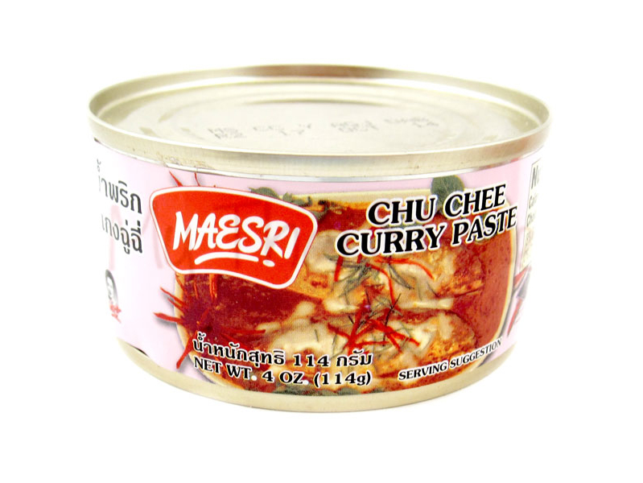
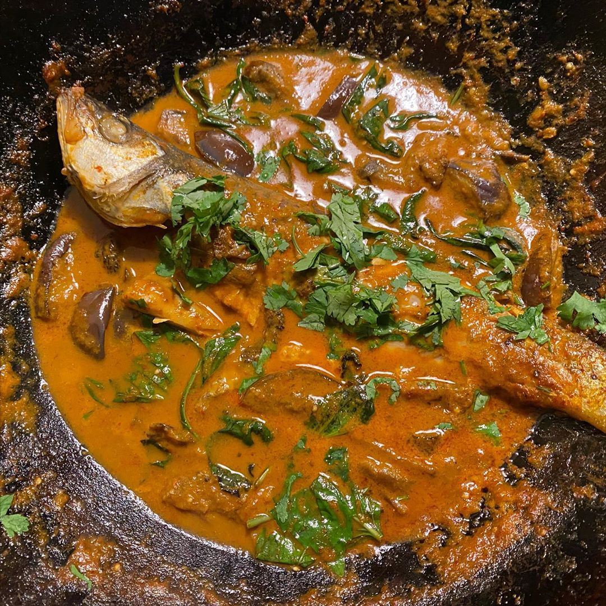

13.04.2020
maesri brand chu chee curry paste
We're launching paste of the week with a delightful little number we picked up on our most recent trip to Fei Long Supermarket. I spent a while the other day looking for a ranking of all of the Maesri pastes, but alas, none yet exists. (watch this space)
Their tins are small, colourful and stack well, giving them an obvious collectible quality. Had not seen this pink tin before (dwarfed in popularity by it's golden cousin, massaman), but the crab picture looked promising.
The paste in question had a nice texture and deep orange colour. For some reason, a small spoonful I ate raw was stunningly reminiscent of Sainsbury's own brand sun dried tomato pesto... I guess umami does umami.

This tin became a fish curry, first frying the fish to crisp the skin then removing from the wok. I took some small indian aubergines (roundboys) and browned them, and took these out too (though I could have left them in). I fried the paste until I could smell it, added some coconut cream, fish sauce, a pinch of sugar, and added the aubergines back. Simmer simmer simmer, add back the fish, simmer more then a bunch of thai basil.
Current maesri tins in stock include: satay, massaman, yellow curry and green curry. Watch this paste!
